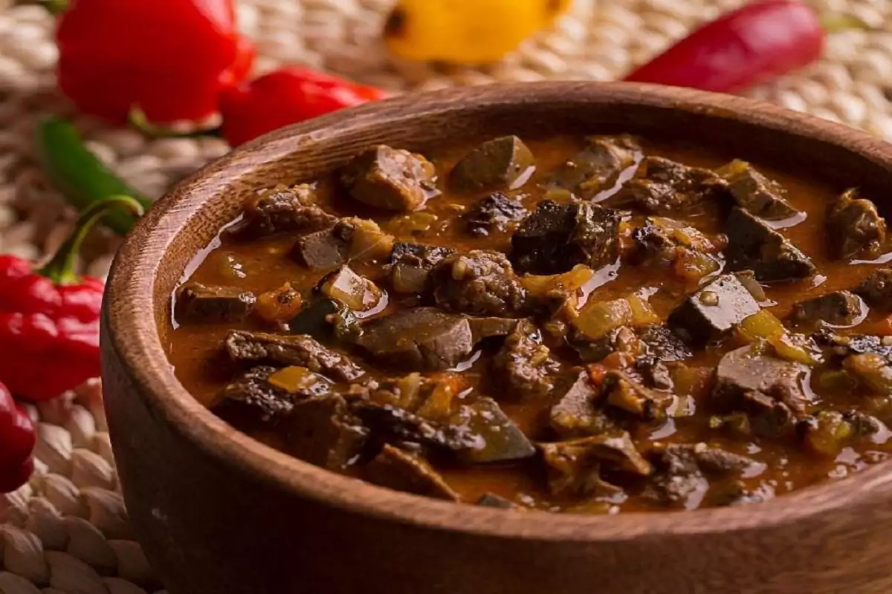

Sarrabulho

•
O sarrabulho é um prato tradicional da culinária portuguesa, especialmente popular na região do Minho. É conhecido pela sua combinação única de carne de porco, sangue de porco e temperos aromáticos, resultando em um prato rico em sabor e textura.
Informação Nutricional
Carne de porco (150g): Cerca de 300-400 calorias, dependendo do corte e do preparo.
Sangue de porco (100g): Cerca de 100-150 calorias.
Cebola (1 unidade média): Cerca de 40-50 calorias.
Alho (2-3 dentes): Cerca de 10-15 calorias.
Vinagre (1 colher de sopa): Cerca de 5 calorias.
Louro (1 folha): Cerca de 5 calorias.
Pimentão (opcional): Cerca de 20-30 calorias.
Sal, pimenta e outros temperos (a gosto): Calorias insignificantes.
R$35,00 | Prato feito
« Voltar ao menu